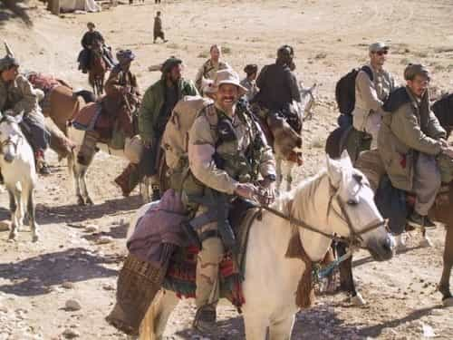

Michael is the author of Staying Married in a Degenerate Age. Follow him on Twitter or Facebook. You can read more of his writing at Honor and Daring.


We are living in dangerous times. Our governing elite has flooded Europe and the US with Muslims which has led to a sharp increase in the frequency of terrorist incidents. Meanwhile, in the USA, leftwing groups are agitating for a race war. Even mainstream pundits like John Bolton recognize that things could easily degenerate into civil unrest if not outright civil war. But there is something you can do to prepare—learn the methods of fourth-generation warfare (4GW).

When we think of war, we usually think of two or more countries battling it out in classical fashion. Good examples of this are the Battle of Waterloo where the French Army under Napoleon was defeated by allied Anglo and Prussian forces or the Allied fight against the Axis powers during World War II. While this idea of war will continue to be relevant, a new form of warfare has emerged.
The simple definition of this new form of warfare, named 4GW, is that a conflict involves at least one non-state actor. The jihadist war against the US in Iraq and Afghanistan certainly qualifies under this definition. But 4GW could also take place between two or more non-state actors. In a sense, 4GW is a return to the ancient way of warfare, before nations existed.
The difference between 4GW and ancient warfare is that 4GW makes full use of modern technology. 4GW can include the IEDs of the jihadists in Iraq, but it also includes the hacking of an enemy’s information systems. The recent hack of the DNC’s emails, which revealed that the media and the Democrats work together to shape a specific narrative, would fall under this category. Another example is the alt-right’s “meme war” against the traditional conservative establishment. Through its nimble use of social media, the alt-right was quickly able to destroy the establishment’s arguments even though it did not control the mass media.
All war tries to destroy the morale of the enemy but 4GW tries to do this not just to the enemy’s military, but also to the enemy’s populace. Creating mistrust of the government is a tactic of 4GW. It is theoretically possible that 4GW could be fought solely on the level of technology and morale. If this work is done exceedingly well, a 4GW conflict might be won without a shot being fired. However, that is very unlikely.
When it comes to actual combat, 4GW takes a more flexible approach than traditional military training. The man who came up with the concept of 4GW, William S. Lind, writes in his book, 4th Generation Warfare Handbook, that mindset of a 4GW warrior is that of a light infantryman:
The light infantryman is characterized by his mental resourcefulness and physical toughness. Light infantry’s inborn self-reliance, reinforced by hard training, convinces the infantryman that he is capable of overcoming the most difficult situations that combat presents. [He] does not feel defeated when surrounded, isolated or confronted by superior forces… This attitude of self-confidence and self-reliance provides light infantry a psychological advantage over its opponents.

Lind outlines a number of different qualities that a 4GW combat warrior will possess. Here are a few of them.
Familiarity with a wide variety of different weapons. The 4GW warrior may have to rely on weapons captured from the enemy so he must be able to use these with ease.
Survival skills. 4GW warriors must be able to live off the land for extended periods of time. Hunting, fishing, trapping, and being able to prepare the game are necessary skills. The ability to purify water is necessary as well.
First aid proficiency. In modern warfare, soldiers are able to rely on being evacuated for medical treatment. This is a luxury that a 4GW fighter will not be able to rely on. Wounds and illnesses must be treated with what is on hand.
Ability to march great distances. The 4GW does not need to be able to run fast or hoist his bodyweight over his head. Lind calls these superfluous. What they do need to be able to do is march for hours carrying a load of around 45 pounds. This is because 4GW units must carry their supplies with them over long distances. At a minimum, a warrior must be able to march for 14 mile stretches.
Land navigation. 4GW warriors must be able to know where they are simply by using a map and a compass. Electronic equipment is nice to have but it relies on battery power and it is heavy to carry.
Demolitions. Demolitions can cause great damage to an enemy’s soldiers, equipment, and supply lines. We can see how effective this can be by the jihadists’ use of IEDs.
Lind discusses many other skills that 4GW warriors must possess but they involve group exercises that are not easy to learn outside the military. However, with the exception of demolitions, every individual can learn some of these skills without investing lots of time or money.

Interestingly, Lind talks quite a bit about how the jihadists in Iraq and Afghanistan were better at getting the local population on their side than the Americans. If the US used a heavy hand in dealing with the insurgency, there was a greater likelihood that an innocent Muslim would be killed or injured. Naturally, when that happened, the victim’s entire family would join the jihadists as a way to get revenge against the Americans.
I actually disagree with some of Lind’s analysis on this topic, but he is right that in 4GW it is critical to get the populace on your side. Otherwise, any ruling state will find it difficult to control the populace over the long term. Chechnya, Iraq, Afghanistan, and the Gaza Strip are all regions that are difficult to rule because the large segments of the populace reject their current overlords.
The simple way to win hearts is to make people dependent on you. Lind mentions that some jihadi organizations pay the widows or parents of jihadis who were killed while warring for Allah. In this way, they build a strong devotion to the community who come to view the jihadists as “good guys.”
While winning hearts certainly applies once open fighting occurs, winning hearts is something that we could start doing today by becoming pillars of our communities. This is a great need because we lack true leaders. Think about it—if the shit hit the fan, would you really follow a politician like Paul Ryan who’s only loyalty seems to be to making himself richer?
There are three basic ways to become a leader. The first is to become a community leader through involvement with your church, a local club, or running for some sort of elected office—say councilman or school board member—and do good work without thought to enriching yourself. You will shine like gold amidst the corrupt politicians. The second way is to gain a following on the internet or other public medium. Many of us would rally around Roosh before Hillary Clinton. A third way is to build credibility with those who are closest to you so that they look up to you as a leader.
The time to start winning hearts is now. Maybe things will never degrade to the point where armed conflict is necessary but even if it doesn’t, being a leader in your community will stand you—and your community—in good stead.
This is only an introduction. If you are serious about learning 4GW, it will take a lot of additional reading and training. The good news is that you do not need to quit your job and join the Marines. Much of skills necessary to wage 4GW are probably things you are already doing if you are a regular ROK reader.
 If you like this article and are concerned about the future of the Western world, check out Roosh's book Free Speech Isn't Free. It gives an inside look to how the globalist establishment is attempting to marginalize masculine men with a leftist agenda that promotes censorship, feminism, and sterility. It also shares key knowledge and tools that you can use to defend yourself against social justice attacks. Click here to learn more about the book. Your support will help maintain our operation.
If you like this article and are concerned about the future of the Western world, check out Roosh's book Free Speech Isn't Free. It gives an inside look to how the globalist establishment is attempting to marginalize masculine men with a leftist agenda that promotes censorship, feminism, and sterility. It also shares key knowledge and tools that you can use to defend yourself against social justice attacks. Click here to learn more about the book. Your support will help maintain our operation.